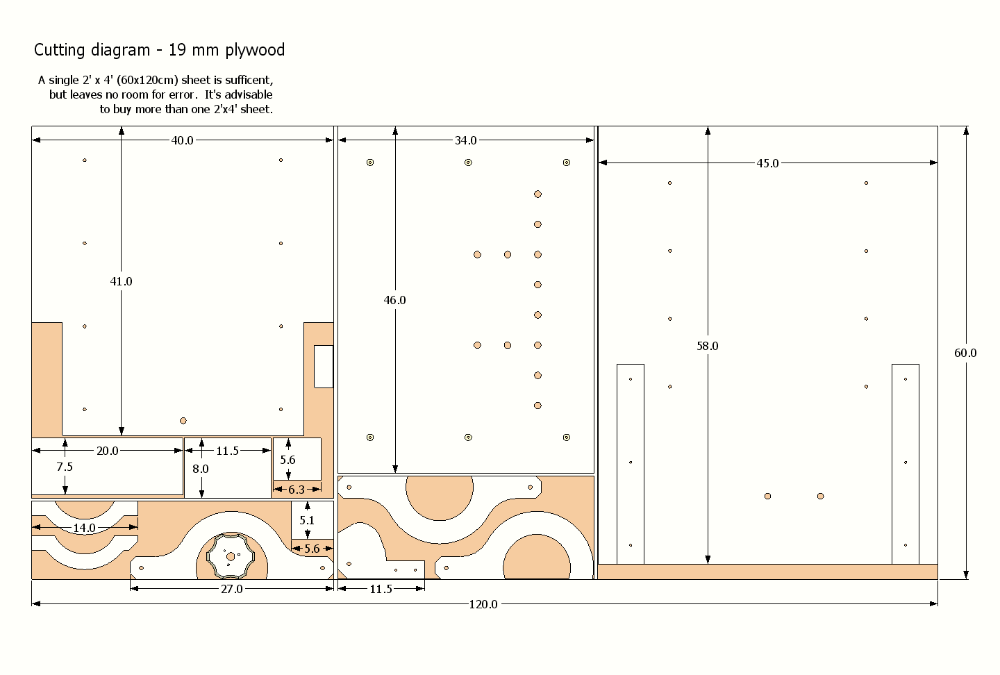
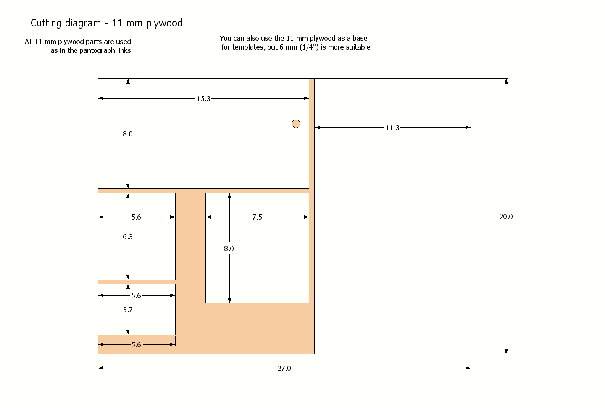
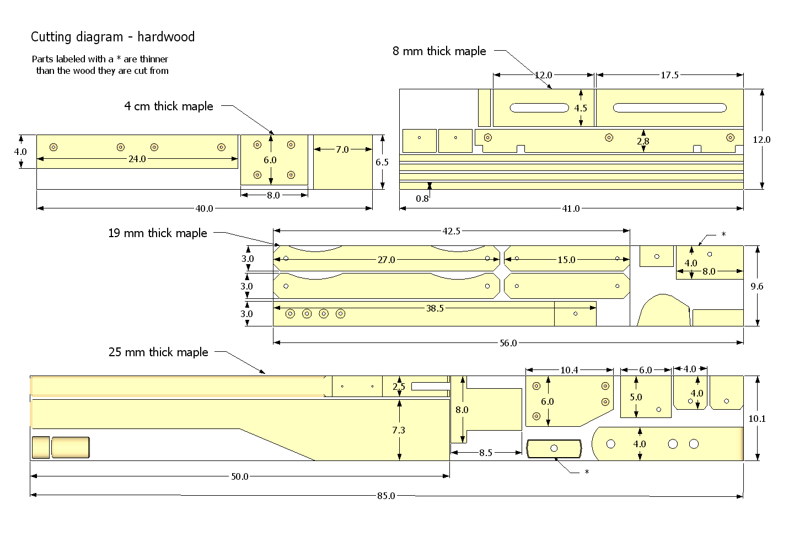
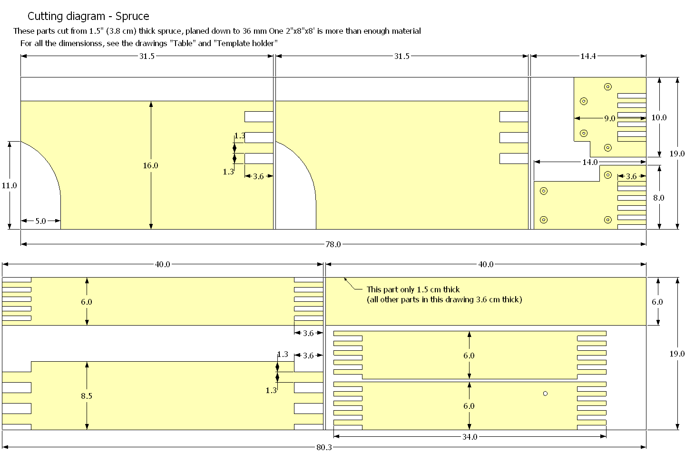

It's advisable to only cut the parts as you build the machine. Otherwise, you end up with a lot of small pieces of wood that you may not remember what they are for.
Please note that the fence is not included in this cutlist. I'ts optional, and there's no material for it if you use a 2'x4' (60x120 cm) piece of plywood. The fence is 24x17 cm of 3/4" (19 mm) birch plywood.    